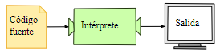
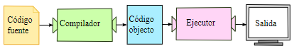

En el ejercicio anterior has visto que hay lenguajes de alto nivel interpretados y lenguajes de alto nivel que se compilan. ¿Qué significa esto?
Ya sabemos que las máquinas sólo entienden el lenguaje de bajo nivel, por lo que los programas escritos en lenguajes de alto nivel tienen que ser traducidos antes de ser ejecutados: ahí entran los intérpretes y los compiladores.
Intérprete

Un intérprete lee un programa de alto nivel y lo ejecuta instrucción a instrucción comunicando cada paso a la máquina. Esto significa que traduce el programa poco a poco a lenguaje de bajo nivel, leyendo y ejecutando cada comando.
Compilador

Un compilador trabaja sobre el programa completo: lo lee y lo traduce antes de ejecutarlo. A los programas escritos en lenguaje de alto nivel que funcionan así se les llama
código fuente, y el programa traducido es llamado código objeto o
programa ejecutable. Cuando un programa ha sido compilado, ya puede ser ejecutado por ese sistema todas las veces que necesite, puesto que sólo tiene que ejecutar el código objeto ya creado y almacenado.
Es un programa informático capaz de analizar y ejecutar otros programas.
Es un programa que traduce código escrito en un lenguaje de programación (llamado fuente) a otro lenguaje (conocido como objeto).